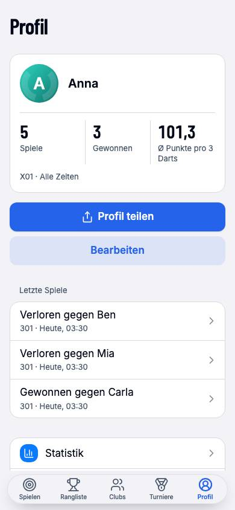
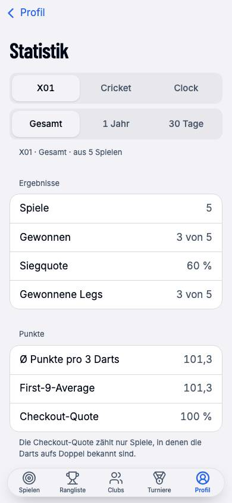
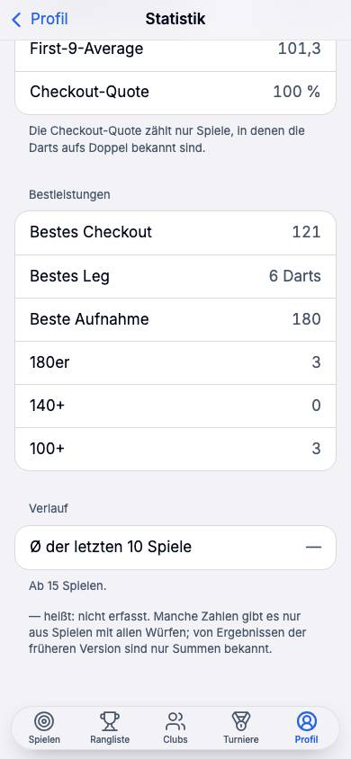
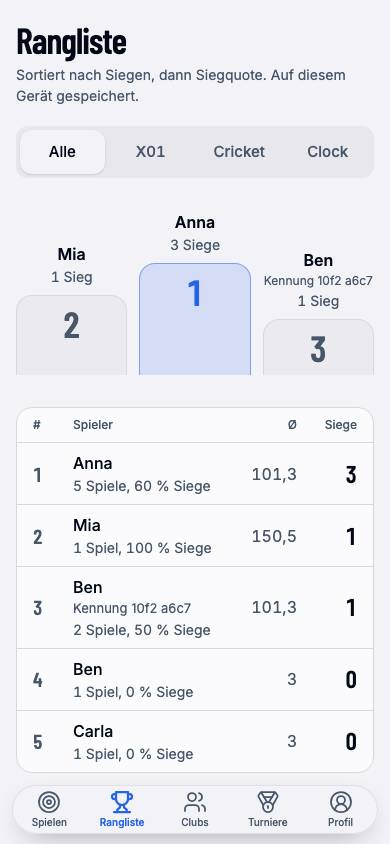
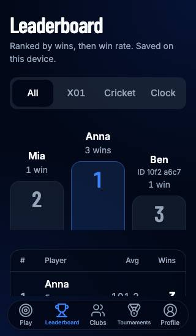
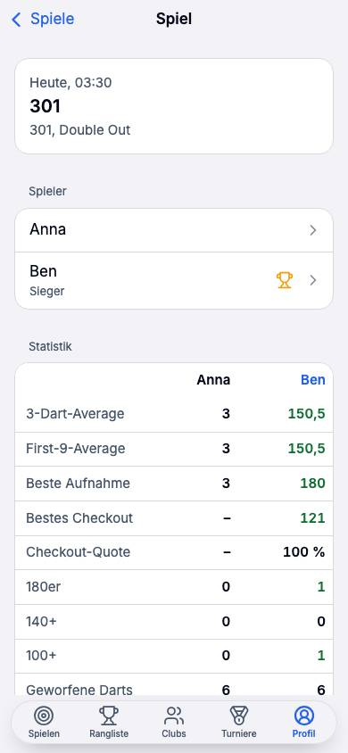

Gegenüberstellung des heutigen Stands mit einem Vorschlag für beide Tabs. Grundlage: der Code auf dem Zweig, die Nachweis-Screenshots, die großen Dart-Apps (DartCounter, Autodarts, Scolia, DartConnect, n01, Dart Tracker), Strava und Apple Fitness, und die Apple Human Interface Guidelines (Stand iOS 26). Die drei Recherchen liegen daneben: Audit des Ist-Stands, HIG-Muster, Dart-Apps.
ux/profil-rangliste: Die Empfehlungen E19 bis E28 sind angenommen und gebaut. Stufe 1 (M1 bis M14) und Stufe 2 (M15: Karte mit optionalen Checkout-Zählern, Sichtbarkeit mit zwei Stufen) sind fertig; Training ist als eigener Bereich mit Karte, Bildschirm und strikter Trennung umgesetzt. Nachweis: lint, typecheck, npm test 688 von 688, Spielabend P8.01 20 von 20 Schritten, 89 von 89 Prüfungen mit neuem Schritt „Rangliste heute Abend“, HIG-Matrix 204 von 204 (dazu die drei Ranglistenbereiche sowie Statistik, Training, Sichtbarkeit und Spielverlauf), zwei unabhängige Reviews (Korrektheit: 6 Befunde, HIG: 25 Befunde; alle bis auf die unten genannten behoben). Offen: Stufe 3 (M16 Import aus anderen Dart-Apps, M17 Bild zum Teilen, M18 Trainingsziel), Prüfung auf echten Geräten mit VoiceOver, öffentliche Relays; aus dem HIG-Review verschoben: Sicherungshinweis und Auszeichnungs-Chip in der Sportkarte (gehören den Bereichen Sicherung und Auszeichnungen), Querformat 568×320 der Rangliste (Steuerung füllt den ersten Bildschirm).Drei Stufen: 1 reines Frontend ohne Protokolländerung (Profil, Training, Rangliste mit drei Bereichen, Export), 2 eine kleine Protokollerweiterung der öffentlichen Statistikkarte für den Vergleich mit Freunden, 3 Import aus Dateien anderer Apps und eine teilbare Bilanz als Bild.






Aus Code (components/profile, components/leaderboard-screen.tsx, lib/storage/stats.ts, lib/clubs/table.ts, lib/tournaments) und den Nachweis-Screenshots. Schwere nach dem Dartabend-Test: „Könnte jemand das sofort in einer lauten Kneipe bedienen, Pfeile in der Hand, ohne Anleitung?“ Die Nummern laufen mit dem Audit.
| Nr. | Befund | Wo | Schwere |
|---|---|---|---|
| B1 | Die Rangliste sortiert nach rohen Siegen über alle Spielarten: 12 von 30 schlägt 5 von 5, ein Cricket-Sieg wiegt wie ein X01-Sieg, keine Mindestzahl. Wer am meisten anwesend ist, führt. | stats.ts:455 | hoch |
| B2 | Kein Zeitraum: eine Liste aller Zeiten. „Wer war heute Abend der Beste?“ lässt sich nicht beantworten. | leaderboard-screen.tsx | hoch |
| B3 | Ein Profil, das unter mehreren Spieler-Einträgen gespielt hat (anderes Gerät, neu angelegt), steht mehrfach drin: die Rangliste übergibt sameAs nicht, obwohl das Profil es nutzt. | lib/leaderboard.ts | hoch |
| B4 | Importierte „Anna“ (1.0.0) und lokale „Anna“ bleiben zwei Zeilen, bis jemand die dritte, getönte Textzeile entdeckt und zuordnet. | imported-sheet.tsx | mittel |
| B5 | Leere Plätze („Spieler 2“) bekommen eigene Zeilen in der Rangliste. | stats.ts:37 | mittel |
| B6 | Das Podium wiederholt die ersten drei Zeilen und kostet auf dem SE 130 pt; die Zeilen tragen vier Textzeilen und zwei große Ziffern. Kein iOS-Listenbild. | leaderboard-screen.tsx | mittel |
| B7 | Nichts öffnet sich: keine Spielerseite, kein direkter Vergleich, die „Letzten Spiele“ sind nicht antippbar, obwohl Spieler- und Spielseite im Profil existieren. | leaderboard-screen.tsx | mittel |
| B8 | Der Tab ist kein Screen-Rahmen wie die anderen: kein Titel, der beim Scrollen schrumpft, keine Leistenaktionen, kein Slot, über den Clubs oder Turniere beitragen könnten. | app/page.tsx:370 | mittel |
| B9 | Unbekannter Durchschnitt: „–“ in der Rangliste, „—“ mit vorgelesenem „nicht erfasst“ im Profil. | beide | niedrig |
| B10 | Die HIG-Matrix prüft auf diesen Tabs nur Protokollwörter; kein Scroll- und Ellipsen-Audit, keine Komponententests. | hig-matrix.mjs | niedrig |
| B11 | Die Profilkarte ist X01 aller Zeiten und sonst nichts; keine Form, kein Trend. Der einzige Verlauf ist eine Zeile tief in der Statistik, ab 15 Spielen, ohne Richtung und ohne Reihe. | own-profile.tsx, stats-view.tsx | hoch |
| B12 | Solo-Spiele zählen in Ø, First 9, Bestleistungen und „Spiele“ des Profils mit (nur nicht in Siege). Übung verschiebt die Wettkampfzahlen; das Üben selbst hat keinen Ort. | stats.ts:165 | hoch |
| B13 | Interoperabilität: kein Import aus anderen Apps; der Spielverlauf verlässt das Gerät nur als Gesamtsicherung (JSON); keine CSV. Die Profilsicherung enthält den Schlüssel, nicht die Spiele. | lib/storage/data.ts | hoch |
| B14 | Vergleichen: nur der lokale Direktvergleich auf der Spielerseite. Die öffentliche Statistikkarte trägt nur Rohsummen (Spiele, Siege, Darts, Punkte); First 9, Checkout, Legs fehlen. | lib/protocol/profile.ts | mittel |
| B15 | Kontodinge (Vorschau, Einstellungen, Info, Erweitert, Geräte, Sicherung, Zahlungen, Abmelden) stehen direkt unter drei Spielen: zwölf und mehr Zeilen vor der Falte auf dem SE. | own-profile.tsx | mittel |
| B16 | Geltungsbereich unklar: „Alle Zeiten“ auf der Karte sagt nicht, dass Spiele von anderen Geräten mitzählen; die Rangliste sagt „Auf diesem Gerät gespeichert“, der Gast-Text ebenso. | profile.screens.de.ts | mittel |
| B17 | Kosten: Karte, Statistikkarte (drei Spielarten) und Statistikseite laufen je einmal durch alle Spiele und spielen beim ersten Öffnen jeden Wurf nach. | stats.ts:348 | mittel |
| B18 | Zeiträume sind rollierende 30 oder 365 Tage; kein „Heute“, keine Saison, keine letzten N Spiele. „Statistik im Profil zeigen“ versteckt sich in der Vorschau. | stats-view.tsx, preview-screen.tsx | niedrig |
Leaderboards: Spieler- und Zeitbereich als Filter über der Liste; die eigene Zeile wird getrennt geliefert und bleibt sichtbar, auch auf Platz 400.HIG › Game Center, GameKit localPlayerEntry
„Your last 90 days of activity are compared to the last 365.“ Pfeil hoch oder runter, ein Satz dazu, und erst ab genug Daten.Apple Fitness › Trends
Highlights beschreiben den Zustand, Trends die Richtung. Kleine Diagramme öffnen das große im selben Stil.Apple Health; HIG › Charting data
„Convey information with more than color alone.“ Pfeil + Wort + Farbe, nie Farbe allein.HIG › Accessibility
Segmented Controls: Substantive, höchstens fünf, für eng verwandte Ansichten. Zeitbereich und Sortierung gehören in ein Menü, nicht in eine zweite Segmentreihe.HIG › Segmented controls, Toolbars
Export über das Teilen-Blatt, Import über die Dateiauswahl, beides abseits des Hauptwegs (Health: Profilbild › „Alle Gesundheitsdaten exportieren“).Apple Health; HIG › Activity views
„Unobtrusively let people know that changes they make won't be available on other devices.“HIG › iCloud
Damit niemand fragt „warum ist mein Durchschnitt hier anders?“: BlueLine rechnet wie die Szene und sagt es. Die Formeln sind heute schon so im Code (stats.ts, Summen vor dem Teilen); neu sind die Benennung auf dem Bildschirm und die Trennung Training / gegen andere.
| Zahl | Formel (wie DartConnect, Autodarts, Wikipedia) | Wo sie steht | Wenn unbekannt |
|---|---|---|---|
| Ø 3 Darts | Punkte gesamt ÷ Darts gesamt × 3 über alle Legs; Bust zählt 3 Darts und 0 Punkte; die Siegaufnahme zählt nur geworfene Darts. Nie Mittel aus Leg-Durchschnitten. | Karte, Form, Rangliste (X01), Vergleich | „—“ mit vorgelesenem „nicht erfasst“; importierte 1.0.0-Ergebnisse haben Summen, also Ø ja, First 9 nein |
| First 9 | Dieselbe Formel über die ersten 9 Darts jedes Legs. | Statistik, Vergleich | nur Spiele mit allen Würfen |
| Checkout | Checkouts ÷ Darts aufs Doppel (dartbasiert). Steht so dabei: „Darts aufs Doppel“. Zählt nur Spiele, in denen die Darts aufs Doppel bekannt sind. | Karte, Statistik, Vergleich | „—“, Fußnote „zählt nur Spiele mit bekannten Darts aufs Doppel“ |
| Siege | Gewonnene Spiele ÷ Spiele gegen andere. Einheit „Spiele“, nicht Legs. Solo-Spiele zählen nie. | Karte, Rangliste | unter 1 Spiel gegen andere: „—“ |
| Bestes Leg | Wenigste Darts bis zum Finish eines gewonnenen Legs (9 ist das Minimum bei 501). | Bestleistungen | nur Spiele mit allen Würfen |
| Höchstes Finish | Größter Checkout in einer Aufnahme (170 ist das Maximum). | Bestleistungen, öffentliche Karte | wie oben |
| Form | Ø der letzten 10 Spiele gegen andere, verglichen mit den 10 davor. Pfeil + Wort + Farbe („1,9 besser“). Ab 5 Spielen, der Vergleich ab 20. | Profil-Karte „Form“, Statistik | „Form ab 5 Spielen gegen andere“ als Satz, kein leerer Platz |
| Training | Spiele allein (ein Spieler): X01 solo mit Ø, Around the Clock mit Trefferquote, Cricket solo mit Marks pro Aufnahme. Je Spiel ein Punkt, im Diagramm nach Woche oder Monat gemittelt. | Profil „Training“, Trainingsseite | „Noch kein Training“ mit der Aktion „Allein spielen“ |
Deine Vorgabe: Wer allein spielt, soll seine Zahlen getrennt geführt bekommen und sich über die Zeit wachsen sehen. Das ist im Datenmodell billig (ein Spiel mit einem Spieler ist heute schon erkennbar, includeSolo existiert) und in der Oberfläche der emotionalste Bildschirm der App. Die Regel ist einfach und steht überall dabei: Training zählt nie in Siege, Form oder Ranglisten. Spiele gegen andere zählen nie ins Training.
Ein Solo-501 landet unter „Letzte Spiele“ als „501 · Heute“, zählt in „Spiele“, Ø, First 9, Bestes Leg und Höchstes Finish der Karte mit, nur nicht in Siege. Die Statistik hat keinen Schalter dafür. Wer eine Woche lang Doppel übt, sieht seine Checkout-Quote auf der Karte sinken, weil Übungsdoppel zählen, und sieht nirgends, dass er beim Üben besser wird.
In der FAQ steht heute schon: „Allein ist es ein Training mit deiner Statistik.“ Das Versprechen gibt es, der Bildschirm fehlt.
sameAs), leere Plätze fallen weg, importierte Namen tragen den Chip „Importiert“ und die Zuordnung bleibt ein Tipp entfernt. Rutscht die eigene Zeile aus dem Bild, hängt sie als „Du · Platz 7“ über der Tab-Leiste (Game Center).seasonTable). „Ganze Tabelle“ öffnet die Clubtabelle, die dieselbe Zeilenform bekommt.storedClubs + seasonTable; keine Protokolländerung.placeTo).Die Spielerseite (player-screen.tsx) mit Bilanz gegen dich und Spieleliste existiert, aber nur über Profil › Spiele › Spiel › Spieler. Aus der Rangliste führt kein Weg dorthin (B7). Die Bilanz ist eine Textzeile, kein Vergleich der Zahlen.
public-view.tsx; Stufe 2 erweitert die Karte um First 9, Checkout, Legs).Deine vier Wege, je mit der Frage: Was sieht die Spielerin, was braucht es darunter, und bleibt die Oberfläche so einfach wie vorher? Die Regel aus deiner Antwort: Komplexität hinter Apple-Mustern, nicht in neuen Bildschirmen.
| Weg | Was die Spielerin sieht | Darunter | Stufe |
|---|---|---|---|
| Profilweit statt geräteweit | Nichts Neues zu bedienen. Die Karte sagt „alle deine Geräte“, sobald Spiele von anderen Geräten da sind, sonst „dieses iPhone“. „Hier gespielt“ zeigt ein Profil als eine Zeile und sagt „Deine Spiele von anderen Geräten zählen mit“. | Die Synchronisierung je Spiel gibt es (lib/sync/history.ts, zusammengeführt über die Spiel-ID). Fehlt nur sameAs in der Rangliste und ein ehrlicher Satz. Kein Protokoll. | 1 |
| Mit Freunden vergleichbar | Auf jeder Spielerseite „gegen dich“ als Balkenpaar; bei Profilen mit geteilter Statistik zusätzlich „insgesamt“. Die Sichtbarkeit der eigenen Zahlen ist eine Auswahl im Konto: „Statistik zeigen: Niemandem · Allen, die mein Profil öffnen“ (Game Center: Everyone / Only You). | Lokaler Direktvergleich existiert (headToHead). Die öffentliche Karte (Kind 31180, unverschlüsselt, vom Spieler signiert) bekommt First 9, Checkout, Legs; Training bleibt draußen. Kleine Erweiterung in lib/protocol/profile.ts über nostr-core, abwärtskompatibel (fehlende Felder = „—“). | 1 lokal, 2 Karte |
| Import aus anderen Apps | Konto › Spielverlauf › „Importieren“ öffnet die Dateiauswahl. BlueLine-Dateien (JSON, 1.0.0) und eine dokumentierte CSV werden erkannt; die Vorschau sagt „38 Spiele, 2023 bis 2026, 3 Namen“, dann „Importieren“. Importierte Spiele tragen überall den Chip „Importiert“ und zählen wie 1.0.0-Ergebnisse: Ø ja, First 9 und Checkout nein. | Ehrlich: DartCounter und Autodarts bieten heute keinen Export; n01 schreibt CSV, DartConnect schickt Berichte per Mail. Ein „DartCounter-Import“ hätte nichts zu lesen. Deshalb: CSV mit festen Spalten (Datum; Spielart; Spieler; Sieger; Darts; Punkte), die Zuordnung von Spaltennamen der n01-CSV als erster Adapter, Namen über importedAliases zuordenbar wie heute. | 3 |
| Export für andere Apps | Konto › Spielverlauf › „Exportieren“: CSV oder JSON, ins Teilen-Blatt (Health-Muster). Auf der Statistik- und Trainingsseite „Teilen“ als Bild der Zahlen (Stufe 3). | CSV nach dem Muster des Turnier-Exports (Semikolon, lib/tournaments/export.ts), JSON = die Spiele des Profils aus dem Gesamtexport (buildExport mit Abschnitt). Kein Protokoll. | 1 Dateien, 3 Bild |
Deine Spiele gegen andere und Trainings, 184 Spiele seit März 2025.
Jeder Bereich hat drei Zustände: nichts da, zu wenig für eine Zahl, genug. Die Texte benennen die eine Aktion, die Daten erzeugt (HIG Tab bars: „If a section is empty, explain why“).
| Ort | Nichts da | Zu wenig | Genug |
|---|---|---|---|
| Sportkarte | Drei „—“ mit Bildunterschrift „Spiel gegen jemanden, dann stehen hier deine Zahlen.“ | Ø ab 1 Spiel, Checkout „—“ bis Darts aufs Doppel bekannt, Siege ab 1 Spiel | drei Zahlen, Geltungssatz |
| Form | Karte mit Satz „Form ab 5 Spielen gegen andere“, kein leeres Diagramm | 5 bis 19 Spiele: Satz und Balken ohne Vergleich („noch kein Davor“) | Satz mit Richtung, Balken, Vergleich |
| Training | „Noch kein Training“ + „Allein spielen“ | unter 3 Trainings im Monat: Monat als „zu wenig“, Satz ohne Richtung | Monatsmittel, Vormonat, Serie |
| Hier gespielt | „Noch kein Spiel gegen andere auf diesem iPhone“ + „Spiel starten“ | Spieler unter der Mindestzahl unter „Noch nicht eingestuft“ mit Grund | Liste, eigene Zeile, Satz |
| Clubs | „Du bist in keinem Club“ + „Clubs ansehen“; Segment bleibt wählbar | Saison ohne bestätigte Spiele: „Noch keine gezählten Spiele“; versiegelt: „Nur für Mitglieder“ | Karte je Club |
| Turniere | „Noch kein Turnier gespielt“ + „Turniere ansehen“ | nur Auszeichnung bekannt: Platz grob, Hinweis auf das andere Gerät | Bilanz und Liste nach Jahr |
Stufe 1 braucht keine Protokolländerung und keine neuen Events; sie lässt sich mit Tests, dem Spielabend-Lauf (P8.01) und der HIG-Matrix absichern. Stufe 2 ist eine kleine, abwärtskompatible Erweiterung der öffentlichen Statistikkarte. Stufe 3 sind Dateien anderer Apps und Bilder.
| Nr. | Maßnahme | Löst | Stufe | Aufwand | Braucht |
|---|---|---|---|---|---|
| M1 | Profil-Tab neu geordnet: Sportkarte (Bild, Name, Auszeichnungsreihe, Ø 3 Darts · Checkout · Siege, Geltungssatz), Form, Training, Letzte Spiele, Auszeichnungen, Konto. Teilen in die Leiste, Bearbeiten in die Karte. | B11, B15, B16 | 1 | mittel | Slots profile.rows in zwei Slots teilen (Sport / Konto) |
| M2 | Form-Karte: Satz mit Richtung, ein Balken je Spiel (letzte 10), Bestwert markiert; Schwellen 5 und 20; VoiceOver-Zusammenfassung. | B11 | 1 | mittel | Reihe je Spiel aus gamesOf + matchState; neuer Baustein „Verlauf“ (reine CSS-Balken, keine Bibliothek) |
| M3 | Statistik: eine Segmentreihe (Spielart), Menü-Chips für Zeitraum (letzte 10 / 30 / 100 / alle, dieses Jahr) und Gegner (gegen andere / Training), großes Diagramm im selben Stil, „davor“-Zeile unter jeder Zahl, Bestleistungen mit Gegner und Datum, Fußzeile mit Basis. | B11, B18 | 1 | mittel | StatsOptions.from/to um „letzte N“ ergänzen; Menü-Chip-Baustein |
| M4 | Training: Solo-Spiele aus Karte, Form, Rangliste und Statistik „gegen andere“ heraus; eigene Trainingsseite mit Monats-/Wochenmittel, Vormonat, Serie, Bestleistungen im Training, letzten Trainings, „Training starten“; Trainingskarte im Profil. | B12 | 1 | groß | includeSolo:false überall, neue Aggregation nach Zeitfenster; Texte in profile.screens |
| M5 | Konto-Abschnitt: Geräte, Sicherung, Zahlungen, Spielverlauf, Sichtbarkeit (mit Vorschau), Einstellungen, Info, Erweitert, Abmelden; Zeilen mit Zustand als Untertitel. | B15, B18 | 1 | klein | Registrierungen in devices/register.ts, payments/register.ts auf den Konto-Slot |
| M6 | Rangliste als Screen-Rahmen mit Slot: drei Segmente (Hier gespielt · Clubs · Turniere), Menü-Chips Spielart und Zeitraum, „⋯“-Menü, Geltungssatz je Bereich. | B2, B8 | 1 | mittel | Slot leaderboard.sections in registry.ts; Clubs und Turniere registrieren ihre Bereiche |
| M7 | Hier gespielt: Rang nach Siegquote mit Mindestzahl, Gleichstand Siege › Ø › Name; „Noch nicht eingestuft“; sameAs; leere Plätze raus; Chip „Importiert“; Zeilen mit Rang, Avatar, Name, Spiele · Siege, Quote groß, Ø klein; eigene Zeile getönt und angeheftet; kein Podium; Zeitraum „Heute“. | B1, B3, B4, B5, B6 | 1 | mittel | computeStandings um Sortierschlüssel, Mindestzahl, Zeitraum erweitern (eine Funktion, Tests) |
| M8 | Zeilen und letzte Spiele führen zur Spielerseite bzw. zum Spiel; Spielerseite mit Balkenpaar „gegen dich“ und, wenn vorhanden, „insgesamt“ aus der öffentlichen Karte. | B7, B14 | 1 | mittel | profile.player im Rangliste-Stapel öffnen; Balken-Baustein |
| M9 | Bereich Clubs: Karte je Club mit laufender Saison (Top 3 + eigene Zeile, Chip „Du: 3.“), Lade- und Versiegelt-Zustand, „Ganze Tabelle“; Clubtabelle in derselben Zeilenform. | neu | 1 | mittel | seasonTable, currentSeason, useClubs |
| M10 | Bereich Turniere: Bilanz (Turniere, gewonnen, Podium), Platzierungen nach Jahr mit „5. bis 8.“, Turniere aus Auszeichnungen mit grobem Platz. | neu | 1 | mittel | placements, BadgeOccasion.places |
| M11 | Export: Konto › Spielverlauf › Exportieren (CSV, JSON) ins Teilen-Blatt; Spalten dokumentiert in docs/. | B13 | 1 | klein | CSV-Schreiber nach tournamentCsv, buildExport-Abschnitt |
| M12 | Leerzustände und Schwellen nach der Tabelle oben; „—“ einheitlich mit vorgelesenem „nicht erfasst“. | B9 | 1 | klein | EmptyState, Figures |
| M13 | Rechnen einmal: Zusammenfassungen je Schlüssel und Zeitraum zwischenspeichern, Reihen je Spiel aus demselben Durchlauf; Profil-Tab darf nicht alle Spiele dreimal durchlaufen. | B17 | 1 | mittel | Cache in lib/profile, Tests mit 500 Spielen |
| M14 | Nachweis: HIG-Matrix auf Profil, Statistik, Training, Rangliste (drei Bereiche) mit Scroll- und Ellipsen-Audit; Spielabend-Szene „Rangliste heute Abend“; Komponententests für Standings und Form. | B10 | 1 | mittel | hig-matrix.mjs, darts-night.mjs |
| M15 | Öffentliche Statistikkarte um First 9, Checkout (Checkouts, Darts aufs Doppel), Legs erweitern; Training bleibt draußen; alte Karten lesbar (fehlend = „—“). Sichtbarkeit als eine Auswahl im Konto. | B14, B18 | 2 | klein | lib/protocol/profile.ts, stats-card.ts, Testvektor; Entscheidung E24 |
| M16 | Import: Konto › Spielverlauf › Importieren mit Dateiauswahl, Vorschau, Chip „Importiert“; BlueLine-JSON, dokumentierte CSV, n01-CSV als erster Adapter. | B13 | 3 | mittel | Entscheidung E26; importedAliases, fromV1Record-Muster |
| M17 | Teilen als Bild: Statistik- und Trainingsseite rendern die Zahlen als Karte (Canvas) ins Teilen-Blatt; DartCounter-„Jahresbilanz“ als Dezember-Variante. | Recherche | 3 | mittel | Entscheidung E27 |
| M18 | Trainingsziel: Ziellinie im Diagramm, vom Spieler gesetzt, lokal gespeichert, nie veröffentlicht. | Training | 3 | klein | Entscheidung E23 |
Reihenfolge, wenn alles gebaut wird: M4 zuerst (die Trennung Training / gegen andere ändert, was alle anderen Zahlen bedeuten), dann M1, M2, M3, M5 (Profil), dann M6, M7, M8 (Rangliste Hier gespielt), M9, M10 (Clubs, Turniere), M11, M12, M13, M14. Stufe 2 und 3 danach, jedes Stück mit Testvektor. Jede Stufe endet mit Lint, Typecheck, Tests, dem P8.01-Spielabend und der Viewport-Matrix; ein unabhängiger HIG-Prüfer sieht jede Oberfläche vor dem Merge.
E1 bis E18 sind aus den früheren Vorschlägen vergeben; hier geht es mit E19 weiter. Zu jeder Frage steht mein Vorschlag; ohne Antwort baue ich den Vorschlag.
| Nr. | Frage | Vorschlag |
|---|---|---|
| E19 | Rang in „Hier gespielt“: Siegquote mit Mindestzahl (3 Spiele im Zeitraum), oder rohe Siege wie heute? Siege belohnen Anwesenheit, die Quote Können; beide bleiben im Menü wählbar. | Siegquote mit Mindestzahl 3 als Standard; „Siege“ und „Ø“ im „⋯“-Menü. Bei „Heute“ reicht Mindestzahl 2. |
| E20 | Podium behalten (verkleinert) oder streichen? | Streichen. Die Ziffern 1 bis 3 in Gold, Silber, Bronze sagen es in der Liste, und die erste Zeile steht auf dem SE über der Falte. |
| E21 | Zeitachse der Form: letzte N Spiele (10 / 30 / 100 / alle) wie Autodarts, oder Kalender (30 Tage / Jahr) wie heute? Die Rangliste braucht ohnehin „Heute“. | Form und Statistik nach Spielen (robust bei Pausen), zusätzlich „Dieses Jahr“; Rangliste nach Kalender (Heute · 30 Tage · Dieses Jahr · Alle Zeiten). |
| E22 | Training: zählt jedes Spiel mit einem Spieler (X01, Clock, Cricket solo) als Training? Oder nur X01? | Jedes Solo-Spiel, je Spielart mit seiner Zahl (Ø, Trefferquote, Marks pro Aufnahme). X01 ist Standardsegment. |
| E23 | Trainingsziel (Ziellinie) schon in Stufe 1 oder später? | Später (M18, Stufe 3). Erst das Wachsen zeigen, dann Ziele. |
| E24 | Öffentliche Statistikkarte: um First 9, Checkout, Legs erweitern (Protokoll, Stufe 2)? Bleibt Training privat? | Ja erweitern, abwärtskompatibel. Training nie in der Karte; wer es zeigen will, teilt das Bild (M17). |
| E25 | Sichtbarkeit: zwei Stufen „Niemandem · Allen, die mein Profil öffnen“ reichen? Eine Stufe „Freunde“ gibt es ohne Freundesliste nicht ehrlich. | Zwei Stufen, als eine Auswahl im Konto, Standard „Niemandem“ wie heute. |
| E26 | Import: nur BlueLine-Dateien und eine dokumentierte CSV (plus n01), da DartCounter und Autodarts keinen Export anbieten? Oder auf deren Export warten? | Dokumentierte CSV + BlueLine + n01 in Stufe 3; weitere Adapter, wenn ein Export existiert. In der App nie „DartCounter-Import“ versprechen. |
| E27 | Teilen als Bild (Statistik, Training, Jahresbilanz): Stufe 3 oder gar nicht? | Stufe 3; Jahresbilanz zuerst (hoher Reiz, DartCounter-Muster). |
| E28 | Was mit den Spielen heute: Gäste ohne Profil in „Hier gespielt“ bleiben wie heute Zeilen; leere Plätze („Spieler 2“) verschwinden aus der Rangliste und werden nur im Satz gezählt? | Ja. Gäste bleiben, leere Plätze raus, Satz „2 Spiele ohne Namen nicht gezählt“. |
GKLeaderboard: documentation/gamekit/gkleaderboarddocs/implementation/PLAN.md (Ranglisten nennen Scope und Bestätigungsstatus, keine manipulationssichere Weltrangliste)